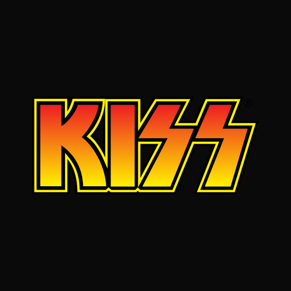

1973. En un sótano de Queens, cuatro músicos rompieron las reglas con maquillaje de cómic, botas gigantes de plataforma y toneladas de pirotecnia para crear a la legendaria KISS Army.
Español Latino • Conducción enérgica clásica FM
Español Latino • Dinámica, brillante y clara
EE. UU. Latino • Tono grave clásico de radio rock